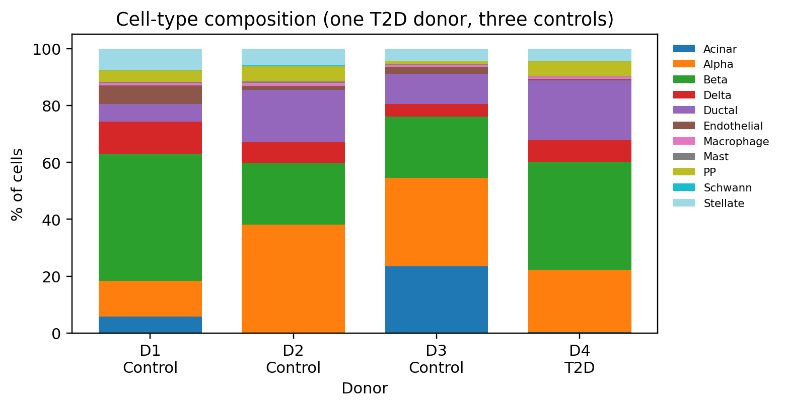
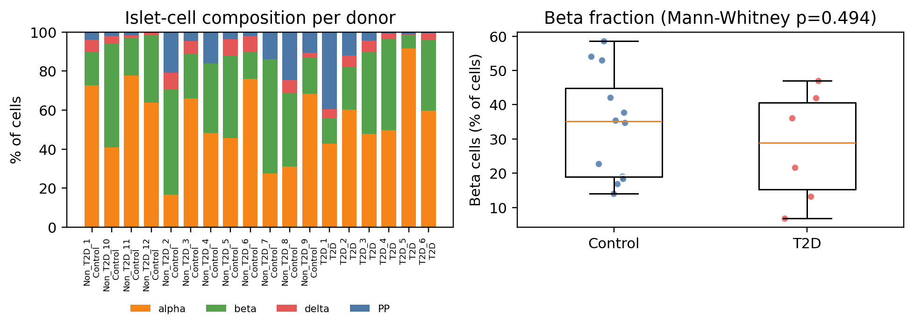

从公共数据到可复现结论：人类胰岛单细胞图谱与 2 型糖尿病再分析
适合对象：刚入学的医学研究生，学过基础分子生物学与统计，但还没有完整跑过 单细胞项目。
你会得到：一套可运行的分析代码、两个真实公开数据集的处理结果、全部中间表与 图，以及“为什么这样做、什么时候会做错”的讲解。
数据：GSE84133（Baron 2016）与 GSE81608（Xin 2016），均为人类胰岛（islet） 公共数据。代码在
code/，结果在results/，图在figures/。
0. 先看结论（TL;DR）
- 数据集 A（GSE84133）：8,569 个细胞、4 名供者，质控后 8,531 个细胞、 16,353 个基因；无监督聚类得到 19 个簇，合并注释为 11 类胰腺/胰岛细胞。 与作者原始标签的调整兰德指数（ARI）为 0.968，说明 marker 注释与独立 聚类高度一致。
- 数据集 B（GSE81608）：1,600 个细胞、18 名供者（12 非糖尿病、6 型 2 糖尿病）， 503 个 β 细胞。用 供者水平 pseudobulk（16 名有 ≥10 个 β 细胞的供者）比较 T2D 与对照，0/9,929 个基因通过 FDR<0.05。
- 如果错误地把每个细胞当独立样本，细胞水平检验会给出 1,217/39,851 个 “显著”基因——这是典型的 伪重复（pseudo-replication），会把供者间的差异 误当成疾病效应。
- 作为阳性对照，β vs α 的 pseudobulk 比较有 3,086/11,053 个基因显著 （INS +10.05、IAPP +9.72、GCG −8.79），说明流程本身有检验效能。
- 因此，本教程的疾病结论是：在这份数据、这个细胞类型、这个模型和这个样本量下， 没有检出可重复的 T2D 全局转录差异；这不是“T2D 没有影响”，而是“当前设计的 检验效能/数据质量不足以支持差异基因列表”。
一句话方法论：先确定推断单位（供者），再谈显著性；先看 metadata，再做图。
目录
1. 单细胞研究范式：我们到底在回答什么问题？
单细胞 RNA-seq（scRNA-seq）不是“跑一张 UMAP”。一个完整研究通常回答四层问题：
| 层次 | 典型问题 | 主要分析 | 结论强度 |
|---|---|---|---|
| 描述 | 组织里有哪些细胞类型？ | QC、聚类、marker 注释 | 探索性 |
| 比较 | 疾病/处理改变了哪些细胞类型或状态？ | 组成分析、差异表达、通路 | 关联性 |
| 机制 | 哪些调控因子/通讯/轨迹驱动变化？ | SCENIC、CellChat、RNA velocity、轨迹 | 假说生成 |
| 验证 | 能否在独立队列/实验中重复？ | 独立数据、smFISH/免疫组化、功能实验 | 因果/可重复 |
本教程覆盖前两层，并刻意加入阳性对照和阴性结果，因为“能跑出图”不等于 “结论可信”。
1.1 三个必须提前想清楚的问题
- 分析单位是什么？ - 细胞是观测单位，但供者是生物学重复。 - 比较 T2D vs 对照时，n 是供者数，不是细胞数。
- 是发现还是验证？ - 发现：在数据集 A 里探索细胞类型/状态，允许假说生成。 - 验证：在独立数据集 B 里检验预设的细胞类型和假设。
- 批次/混杂是否与分组共线？ - 如果所有 T2D 供者都来自同一中心、同一批次，那么“疾病效应”和“批次效应” 无法分离。这是公共数据再分析最常见的问题。
2. 公共数据资源与选题
2.1 常用数据库
| 资源 | 适合做什么 | 注意点 |
|---|---|---|
| GEO | 最常用的 scRNA-seq 原始/处理后数据 | 以 Series（GSE）为单位；要看 sample metadata 和 supplementary 文件 |
| CELLxGENE | 已整理、带标准注释的单细胞图谱；可在线浏览/下载 h5ad | schema 统一，但版本和细胞筛选需核对 |
| Human Cell Atlas | 人体组织参考图谱 | 数据量大；部分项目有受控访问 |
| HPAP / PANC-DB | 人类胰腺/胰岛，糖尿病相关 | 部分数据需按页面说明申请；临床元数据较丰富 |
| Single Cell Portal | Broad 发布的图谱，带在线可视化和 processed 矩阵 | 以研究项目为单位，下载格式不统一 |
| ArrayExpress / BioStudies | 欧洲镜像/补充资源 | 与 GEO 有交叉，但并非所有 GSE 都有镜像 |
| Tabula Sapiens | 多器官健康人参考图谱 | 适合做细胞类型参考/标签转移 |
| GTEx | 组织水平 bulk 表达/eQTL | 不是单细胞；可做 deconvolution/validation |
| GSE176171 | 人/鼠白色脂肪单细胞图谱（肥胖方向） | 数据量大；脂肪组织解离偏差明显 |
2.2 检索策略（以 GEO 为例）
关键词组合示例：
("single-cell"[All Fields] OR "scRNA-seq"[All Fields])
AND (pancreatic islet*[All Fields] OR "islet of Langerhans"[All Fields])
AND ("type 2 diabetes"[All Fields] OR T2D[All Fields])
筛选时逐项核对：
- 物种/组织：人？胰岛？全胰腺？脂肪？
- 疾病定义：T2D 如何诊断（HbA1c、空腹血糖、用药）？对照是否匹配年龄/BMI？
- 样本量：供者数、每组供者数、每个供者的细胞数。
- 平台：10x、inDrop、Smart-seq2、snRNA-seq；不同平台不能直接拼。
- 数据层级：raw counts、processed counts、RPKM/TPM、仅聚类标签。
- 元数据：年龄、性别、BMI、HbA1c、胰岛纯度、批次、解离方案。
- 是否有作者标签：可用于独立验证注释，但不能当“金标准”。
2.3 为什么选这两个数据集
| GSE84133（Baron 2016） | GSE81608（Xin 2016） | |
|---|---|---|
| 组织 | 人胰岛（inDrop） | 人胰岛（单细胞 RNA-seq） |
| 细胞数 | 8,569 | 1,600（论文报告 1,492） |
| 供者 | 4（3 对照，1 T2D） | 18（12 对照，6 T2D） |
| 基因 | 20,125 | 39,851 |
| 数据类型 | UMI counts | gene-level RPKM |
| 作者标签 | 14 类（含 rare types） | α/β/δ/PP |
| 本教程用途 | 无监督图谱、聚类、注释 | T2D vs 对照 pseudobulk DE |
选择理由：
- GSE84133 是经典的人类胰腺单细胞图谱，细胞类型丰富、作者标签完整，适合学习 聚类和注释；但只有 1 个 T2D 供者，不能用于可靠的疾病比较。
- GSE81608 有 18 名供者、疾病分组相对平衡，适合学习供者水平差异表达； 但它是 RPKM，不是 UMI counts，且没有线粒体基因/空液滴信息。
关键坑：GSE84133 的 4 名供者中只有 1 名 T2D（D4），不是“2 vs 2”。 不要根据文件名或印象判断分组；一定要读 series matrix 的
!Sample_characteristics_ch1。
3. 数据获取与工程化
3.1 GEO 的文件结构
一个 GSE 通常有三类文件：
- Series matrix：样本元数据 + 表达矩阵（如果有）；本教程用它核对供者、 疾病、年龄、性别、BMI。
- Supplementary files：作者上传的处理后矩阵，常在
https://ftp.ncbi.nlm.nih.gov/geo/series/GSE.../suppl/。 - Sample-level supplementary files：每个 GSM 一个文件，适合只下载需要的样本； GSE84133 的 4 个人类样本就在这一层。
本教程使用 code/download_ranges.py：把 gzip 文件切成多个 byte range 并行下载，
再按顺序拼接。gzip 是字节流，因此按序拼接 range 可以精确重建原文件。
python code/download_ranges.py `
"https://ftp.ncbi.nlm.nih.gov/geo/series/GSE81nnn/GSE81608/suppl/GSE81608_human_islets_rpkm.txt.gz" `
"data/GSE81608_human_islets_rpkm.txt.gz" --workers 8 --chunk-mb 4
下载后核对 SHA256（见 data/README.md）。这一步看似琐碎，但公共数据再分析最
常见的问题是“下错文件/版本变了/样本对不上”。
3.2 从矩阵到 AnnData
单细胞分析的核心数据结构是 AnnData：
X：细胞 × 基因的表达矩阵（本教程用稀疏 CSR）；obs：每个细胞一行，记录供者、疾病、年龄、性别、作者标签；var：每个基因一行，记录基因名、是否线粒体、是否高变；layers：保存原始 counts/RPKM，避免归一化后丢失原始值；obsm：PCA/UMAP 等降维结果；uns：数据集说明、配色等。
代码骨架（code/00_prepare_data.py）：
adata = ad.AnnData(
X=csr_matrix(counts), # cells x genes
obs=pd.DataFrame(metadata, index=cell_ids),
var=pd.DataFrame(index=gene_names),
)
adata.layers["counts"] = adata.X.copy() # 保留原始值
adata.var_names_make_unique()
adata.write_h5ad("data/processed/baron_raw.h5ad")
3.3 基因 ID 映射
GSE81608 的第一列是 Entrez GeneID（1, 2, 3…），不是基因符号。我们用 NCBI
Homo_sapiens.gene_info.gz 把 GeneID 映射到 HGNC symbol；39,851 个 ID 中
37,987 个成功映射。未映射的保留为 Entrez:<id>，避免丢失。
教学点：公共矩阵的“基因名”可能是 Ensembl ID、Entrez ID、RefSeq、探针 ID， 甚至带版本号。先确认 ID 类型，再做任何注释/富集。
4. 质控（QC）：先看分布，再定阈值
4.1 看哪些指标
| 指标 | 说明 | 异常提示 |
|---|---|---|
| 检测基因数（nGene） | 每个细胞检测到的基因数 | 过低：空液滴/死细胞；过高：双细胞 |
| UMI 总数 | 每个细胞的 counts | 过低：文库失败；过高：双细胞 |
| 线粒体比例 | MT- 基因 counts 占比 | 过高：细胞应激/死亡 |
| 双细胞评分 | Scrublet/scDblFinder | 双细胞会形成“混合”簇 |
| 环境 RNA | SoupX/CellBender | 外泌/裂解 RNA 污染 |
| 复杂度 | 基因数/UMI 的关系 | 低复杂度提示异常 |
4.2 本教程的实际处理
| GSE84133 | GSE81608 | |
|---|---|---|
| 原始细胞 | 8,569 | 1,600 |
| 过滤规则 | nGene ≥ 800；UMI ≥ 1,500；nGene ≤ 5,000；基因在 ≥3 个细胞表达 | 未删细胞（所有细胞 >2,400 基因） |
| 保留细胞 | 8,531（99.6%） | 1,600（100%） |
| 保留基因 | 16,353 | 39,851 |
| 线粒体 | 无 MT- 基因（处理后矩阵只保留 20,125 个蛋白编码基因） | 无 MT- 基因 |
| 双细胞 | 未做（无原始空液滴） | 未做 |
sc.pp.calculate_qc_metrics(adata, qc_vars=["mt"], inplace=True)
sc.pp.filter_cells(adata, min_genes=800)
sc.pp.filter_cells(adata, min_counts=1500)
sc.pp.filter_genes(adata, min_cells=3)


4.3 不要机械套用“线粒体 < 20%”
- 不同组织、不同平台、不同解离方式的最优阈值不同。胰岛细胞本身代谢活跃， 线粒体比例可能偏高；心肌、肝细胞也不同。
- 应该看分布：如果 mito% 在 0–20% 有一个明显的低值主峰，20% 可能是合理的； 如果整体连续，硬切会丢掉真实细胞。
- 本数据没有 MT- 基因，所以不能计算 mito%；不要为了“流程完整”而编造一个 0% 的线粒体图。
生产级流程还应包括：空液滴剔除（EmptyDrops）、双细胞检测（Scrublet/ scDblFinder）、环境 RNA 校正（SoupX/CellBender）。这些需要原始 barcode 矩阵， 处理后矩阵通常做不到。
5. 归一化与特征选择
5.1 两种数据类型，两种归一化
| 数据类型 | 做法 | 本教程 |
|---|---|---|
| UMI counts | 每个细胞缩放到相同总 counts（如 1e4），再 log1p |
GSE84133 |
| RPKM/TPM | 已经按基因长度和测序深度归一化，直接 log2(x+1) |
GSE81608 |
# counts
sc.pp.normalize_total(adata, target_sum=1e4)
sc.pp.log1p(adata)
# RPKM
adata.X.data = np.log2(adata.X.data + 1)
不要对 RPKM 再做 CP10k；也不要在 log 后的数据上做
normalize_total。 归一化顺序错了，后面的 HVG、PCA、DE 都会跟着错。
5.2 高变基因（HVG）
- 目的：把 20,000+ 个基因降到 2,000 个信息量大的基因，降低噪声和计算量。
- 使用
batch_key="donor"，让 HVG 在供者间更稳定。 - 不要用“差异表达基因”来选 HVG 后再做同一比较（double dipping）。
sc.pp.highly_variable_genes(
adata, n_top_genes=2000, batch_key="donor", flavor="seurat"
)
adata = adata[:, adata.var["highly_variable"]].copy()
sc.pp.scale(adata, max_value=10)
scale会把稀疏矩阵变成稠密矩阵；大数据集要分块/用替代方案。本数据规模 （8,531 × 2,000）可以接受。
6. 降维、聚类与批次
6.1 标准顺序
- PCA（50 个主成分，取前 30 个）；
- kNN 图（k=15）；
- UMAP（可视化）；
- Leiden（聚类，resolution 控制粒度）。
sc.tl.pca(adata, n_comps=50, svd_solver="arpack", random_state=42)
sc.pp.neighbors(adata, n_neighbors=15, n_pcs=30, random_state=42)
sc.tl.umap(adata, random_state=42)
sc.tl.leiden(adata, resolution=0.6, random_state=42,
flavor="igraph", n_iterations=2, directed=False)
6.2 本教程的结果
| GSE84133 | GSE81608 | |
|---|---|---|
| Leiden resolution | 0.6 | 0.4 |
| 簇数 | 19 | 8 |
| 合并后类型 | 11 | 4 |
| 主要问题 | 亚群多（β 应激、ductal REG+） | α 细胞被拆成 5 簇 |
GSE84133 的 19 个簇并不是 19 种细胞类型：β 细胞被分成 4 簇（其中一簇高表达 DDIT3/HSPA5/HERPUD1，是 ER 应激状态），α 细胞 3 簇，ductal 4 簇。聚类粒度 ≠ 细胞类型数；需要 marker 注释后再合并。
GSE81608 的 8 个簇中，α 细胞被拆成 5 簇，β/δ/PP 各 1 簇；合并注释为 4 类。 α 的过度拆分很可能来自供者/技术差异，而不是 5 种 α 细胞。

6.3 批次：什么时候校正，什么时候不要校正
- 本教程没有做 Harmony/ComBat。原因：GSE84133 的 T2D 状态与 D4 供者完全 共线；如果强行按供者校正，可能把疾病信号一起删掉。
- 我们做了两件事：
1. 在 UMAP 上检查供者混合情况（
color="donor"）； 2. 在注释后检查每个簇的供者组成。 - 如果要做跨数据集图谱整合，才考虑 Harmony/scVI/BBKNN；并且要在不包含 疾病标签的嵌入上评估批次混合，避免“用标签校正”。
经验法则：批次校正的目的是让同一细胞类型在不同批次中对齐，不是让疾病 分组消失。当分组与批次共线时，任何“校正后差异消失”都可能是过校正。
7. 细胞类型注释
7.1 用 marker，而不是只看簇编号
| 类型 | 关键 marker |
|---|---|
| β | INS, IAPP, MAFA, NKX6-1, PDX1, UCN3, SLC2A2 |
| α | GCG, IRX2, ARX, TTR |
| δ | SST, HHEX, LEPR |
| PP（γ） | PPY |
| 腺泡 | CPA1, CELA3A, PRSS1, AMY2A |
| 导管 | KRT19, CFTR, MUC1, TFF1；REG+ 亚群：REG3A, OLFM4, REG1A |
| 内皮 | PECAM1, VWF, CDH5 |
| 星状细胞 | COL1A1, PDGFRB, RGS5, ACTA2 |
| 巨噬细胞 | CD68, LYZ, C1QA |
| 肥大细胞 | TPSAB1, CPA3 |
| Schwann | SOX10, PLP1, S100B |

7.2 注释结果与验证
| 簇 | 注释 | 关键证据 |
|---|---|---|
| 1, 3, 12 | β | INS/IAPP/MAFA/NKX6-1/PDX1 |
| 2 | β（ER 应激高） | DDIT3, HSPA5, HERPUD1, TRIB3 |
| 8, 9, 10 | α | GCG, IRX2, ARX, TTR |
| 4 | δ | SST, HHEX, LEPR |
| 13 | PP | PPY |
| 0 | 腺泡 | CPA1, CELA3A, PRSS1 |
| 7, 11, 15, 18 | 导管 | KRT19, CFTR, MUC1；18 为 REG+ |
| 5 | 星状 | COL1A1, PDGFRB, RGS5 |
| 6 | Schwann | SOX10, PLP1 |
| 14 | 内皮 | PECAM1, VWF, CDH5 |
| 16 | 巨噬细胞 | CD68, LYZ, C1QA |
| 17 | 肥大 | TPSAB1, CPA3 |
- 与作者标签的 ARI = 0.968（Baron）；GSE81608 为 0.856（α 被拆分）。
- 罕见类型：作者标注了 18 个 ε 细胞和 7 个 T 细胞；在当前分辨率下，它们没有 形成独立簇（ε 被 β 吸收，T 细胞被巨噬细胞簇吸收）。这是样本量/分辨率的 限制，不是“这些细胞不存在”。

注释的三个常见错误： 1. 用同一组 marker 既聚类又“验证”注释（循环论证）； 2. 只看一个 marker（如 INS）就定 β，忽略双细胞/环境 RNA； 3. 把作者标签当绝对真理。作者标签是独立参考，不是 ground truth。
8. 细胞组成分析：比例变化不等于疾病效应
8.1 正确做法
- 先算每个供者内各类型的比例；
- 再比较组间（供者水平），而不是把所有细胞混在一起算比例；
- 组成数据是成分数据（总和为 1），可用 CLR/ILR、scCODA、propeller 等；
- 报告绝对细胞数 + 比例 + 供者数。
8.2 Baron 的结果（描述性）
| 供者 | 条件 | β 比例 | 腺泡比例 |
|---|---|---|---|
| D1 | 对照 | 44.8% | 5.8% |
| D2 | 对照 | 21.6% | 0.1% |
| D3 | 对照 | 21.5% | 23.4% |
| D4 | T2D | 37.9% | 0.4% |
β 比例在 4 名供者间波动很大（21.5%–44.8%），而腺泡比例从 0.1% 到 23.4%。 这更可能反映胰岛制备纯度/解离差异，而不是疾病。只有 1 名 T2D 供者， 不能做组间统计。

8.3 GSE81608 的结果
12 名对照 vs 6 名 T2D：
- 对照 β 比例中位数 35.1%；
- T2D β 比例中位数 28.9%；
- Mann-Whitney p = 0.494。
没有证据表明两组 β 比例不同。但要注意：这是分选/处理后的细胞，不一定代表 组织原位比例；而且供者数只有 18。

9. 差异表达：为什么必须做 pseudobulk
9.1 伪重复：单细胞分析最危险的统计错误
18 名供者共有 503 个 β 细胞（其中 16 名供者有 ≥10 个 β 细胞，用于 pseudobulk）。 如果你把这 503 个细胞当成 503 个独立样本做 t 检验：
- 你会得到极小的 p 值（因为 n 很大）；
- 但真正的独立重复是供者（naive 分析中 18 名，pseudobulk 中 16 名）， 不是 503；
- 同一供者的细胞高度相关，p 值被严重低估；
- 性别、年龄、批次、解离质量等供者级混杂会被当成“疾病效应”。
本教程的对比：
| 分析 | 基因数 | FDR<0.05 |
|---|---|---|
| 细胞水平朴素 t 检验（错误） | 39,851 | 1,217 |
| 供者水平 pseudobulk（正确） | 9,929 | 0 |
| 阳性对照：β vs α pseudobulk | 11,053 | 3,086 |

细胞水平结果中出现了 XIST（性别）、ND3（线粒体）、大量 lncRNA/假基因，
这本身就是“供者/技术混杂”的信号。
9.2 Pseudobulk 的做法
- 选定细胞类型（β）；
- 每个供者内，对该细胞类型的 RPKM 取平均（或对 counts 求和）；
- 得到“供者 × 基因”矩阵（16 × 39,851）；
- 每个基因拟合一个模型：
log2(RPKM_ij + 1) = β0 + β1·T2D + β2·age_z + β3·male + ε
- 对 β1 做 t 检验，BH 校正；报告效应量 + FDR，而不是只看 p。
本教程的代码（code/04_gse81608_de.py）用向量化最小二乘一次拟合所有基因：
X = np.column_stack([np.ones(n), is_t2d, age_z, is_male])
coef, *_ = np.linalg.lstsq(X, Y, rcond=None)
resid = Y - X @ coef
se = np.sqrt((resid**2).sum(0) / (n - rank) * np.linalg.inv(X.T @ X)[1, 1])
t = coef[1] / se
p = 2 * stats.t.sf(np.abs(t), n - rank)
padj = multipletests(p, method="fdr_bh")[1]
9.3 结果：没有全局 T2D 信号
- 9,929 个基因通过表达过滤；
- 最小 FDR = 0.95；
- p 值分布接近均匀（QQ 图贴对角线）；
- 0 个基因通过 FDR<0.05，更不用说 |log2FC|>0.5。

β 身份基因（INS、IAPP、MAFA、PDX1、UCN3、SLC2A2）和内质网应激基因 （HSPA5、DDIT3）在 T2D 与对照之间都没有显著差异：

9.4 阳性对照：β vs α
为了证明“0 个基因”不是因为流程坏了，我们做了 β vs α 的 pseudobulk 比较 （14 名同时有 ≥10 个 α 和 ≥10 个 β 细胞的供者，配对 t 检验）：
- 3,086/11,053 个基因 FDR<0.05；
- INS +10.05、IAPP +9.72、GCG −8.79、DLK1 +7.25、DPP4 −4.64；
- 这些完全符合 β/α 的生物学身份。
阳性对照 + 阴性结果一起说明：流程有检验效能，但 T2D 的全局差异在本数据/ 本模型下不可检出。
9.5 为什么和原论文的 245 个基因不一样？
Xin 等（2016）报告了 245 个 T2D 相关基因。我们的再分析得到 0 个，可能原因：
- 分析单位不同：原文可能使用细胞水平模型/混合模型；我们使用保守的 供者水平 pseudobulk。
- 数据版本不同：论文报告 1,492 个细胞，GEO 矩阵有 1,600 列；作者的 质控/过滤可能不同。
- 协变量不同：我们调整了年龄和性别；T2D 组年龄均值偏高 （45.7 vs 41.2 岁），调整后效应可能进一步缩小。
- RPKM 的限制：不是 UMI counts，无法做 counts-based 模型；基因长度和 批次归一化可能引入噪声。
- 阈值不同：我们要求 FDR<0.05；原文可能报告 nominal p 或不同 FDR。
- 样本量/效能：16 名供者、6 名 T2D，对中等效应仍可能不足。
这不是“原论文错了”，而是分析选择会改变结论。可复现研究应该报告： 数据版本、细胞筛选、协变量、模型、FDR 阈值，以及阴性/阳性对照。
10. 结果解读：哪些话可以说，哪些不能说
10.1 可以说
- 在这份数据中，人类胰岛包含 α、β、δ、PP、腺泡、导管、内皮、星状、巨噬、 肥大、Schwann 等细胞类型；marker 注释与作者标签高度一致（ARI 0.968）。
- β 细胞存在 ER 应激相关状态（DDIT3/HSPA5/HERPUD1 高表达），与 Baron 原文 报道的 β 异质性一致。
- 在 GSE81608 的 16 名供者中，未检出 β 细胞 T2D vs 对照的全局表达差异； β 比例差异也无统计学意义（p=0.494）。
- 细胞水平检验会产生大量假阳性；pseudobulk/混合模型是更合适的推断方式。
10.2 不能说
- “T2D 对 β 细胞没有影响”——阴性结果不等于无效应。
- “我们发现了 T2D 的关键基因”——本分析没有显著基因。
- “β 比例在 T2D 中下降”——p=0.494，且受分选/纯度影响。
- “GSE84133 的 D4 与对照的差异是糖尿病效应”——只有 1 名 T2D 供者，完全 与供者/批次共线。
10.3 如果要把这个故事做成论文，还需要什么
- 更大的独立队列（HPAP/PANC-DB、多个 GSE）；
- 原始 counts + 空液滴/双细胞/环境 RNA 校正；
- 供者水平的年龄、性别、BMI、HbA1c、胰岛纯度、批次；
- 预设的细胞类型和模型；pseudobulk + 混合模型/limma-voom/DESeq2；
- 独立验证（免疫组化、smFISH、功能实验）；
- 报告效应量和置信区间，而不只是 p 值。
11. 可复现性与常见坑
11.1 检查清单
- [ ] 原始数据 URL、下载日期、SHA256；
- [ ] 数据版本（GEO 可能更新）；
- [ ] 样本 metadata 与矩阵列/行一一对应；
- [ ] 基因 ID 类型与映射表；
- [ ] QC 阈值及保留/删除的细胞数；
- [ ] 归一化方法；
- [ ] HVG 数量、batch key；
- [ ] PCA/邻接图/聚类参数、随机种子；
- [ ] 注释 marker 与独立验证（作者标签/蛋白）；
- [ ] DE 的推断单位、协变量、FDR；
- [ ] 阴性/阳性对照；
- [ ] 软件版本（
results/session_info.txt）。
11.2 常见坑
| 坑 | 后果 | 修复 |
|---|---|---|
| 把细胞当独立重复 | p 值极小、假阳性 | pseudobulk/混合模型 |
| 用文件名猜分组 | 分组标错 | 读 series matrix |
| 疾病与批次共线 | 无法区分 | 独立队列/配对设计 |
| 机械套用 mito<20% | 丢失真实细胞 | 看分布、按组织定阈值 |
| 用 HVG 做过又做 DE | double dipping | 预设基因集/独立数据 |
| 用 marker 聚类又用同一 marker 验证 | 循环论证 | 独立标签/蛋白验证 |
| 只看 p，不看效应量 | 大 n 下微小差异也显著 | 报告 log2FC/CI |
| 忽略环境 RNA/双细胞 | 混合簇/假 marker | SoupX/Scrublet |
| 过度解释组成比例 | 分选/纯度混杂 | 供者水平 + 纯度协变量 |
| 只报显著结果 | 发表偏倚 | 报告阴性/阳性对照 |
12. 下一步学习路线
12.1 两周内
- 重跑本教程，改一个参数（resolution、HVG 数、QC 阈值），观察结果变化；
- 用
sc.tl.rank_genes_groups检查每个簇的 top markers； - 用
sc.pl.dotplot自己挑一组 marker，练习注释。
12.2 一个月内
- 加入 GSE176171（肥胖脂肪组织）或 HPAP 数据，重复同一流程；
- 学习 pseudobulk + DESeq2/limma-voom（R）或 PyDESeq2；
- 学习组成分析（scCODA、propeller）；
- 学习细胞通讯（CellChat/CellPhoneDB）和调控网络（SCENIC）。
12.3 两个月内
- 选择一个明确的临床问题（如“肥胖胰岛素抵抗的脂肪祖细胞状态”）；
- 设计发现+验证两队列；
- 做 power analysis（供者数、每供者细胞数）；
- 预注册分析计划，报告阴性与阳性对照。
12.4 推荐阅读
- Luecken & Theis, Mol Syst Biol 2019：单细胞分析最佳实践教程。
- Heumos et al., Nat Rev Genet 2023：跨模态单细胞分析最佳实践。
- Squair et al., Nat Commun 2021：单细胞 DE 的假发现。
- Murphy & Skene, Nat Commun 2022：pseudobulk 方法比较。
- Baron et al., Cell Syst 2016；Xin et al., Cell Metab 2016：本教程的数据来源。
附录 A：运行命令
python -m pip install -r requirements.txt
# Windows 上如遇 numba/llvmlite 的 SVML 报错，设置：
$env:NUMBA_DISABLE_INTEL_SVML = "1"
# 数据下载见 data/README.md
python code/00_prepare_data.py
python code/01_baron_cluster.py
python code/02_baron_annotate.py
python code/03_gse81608_cluster.py
python code/04_gse81608_de.py
python code/05_report_figures.py
python code/06_session_info.py
附录 B：主要输出文件
| 文件 | 内容 |
|---|---|
data/processed/baron_raw.h5ad |
Baron 原始 counts + metadata |
data/processed/baron_annotated.h5ad |
Baron 聚类 + 注释 |
data/processed/gse81608_raw.h5ad |
GSE81608 RPKM + metadata |
data/processed/gse81608_annotated.h5ad |
GSE81608 聚类 + 注释 |
results/baron_celltype_composition_pct.csv |
Baron 供者水平组成 |
results/baron_annotation_ari.csv |
Baron ARI |
results/gse81608_beta_pseudobulk_de.csv |
T2D vs 对照 pseudobulk DE |
results/gse81608_beta_celllevel_naive_de.csv |
细胞水平朴素 DE（反例） |
results/gse81608_beta_vs_alpha_positive_control.csv |
β vs α 阳性对照 |
results/de_method_comparison.csv |
三种分析对比 |
results/summary_metrics.csv |
数据集汇总指标 |
results/session_info.txt |
软件版本 |
附录 C：数据与引用
- GSE84133: GEO； Baron M, et al. Cell Syst. 2016;3(4):346-360.e4. doi:10.1016/j.cels.2016.08.011
- GSE81608: GEO； Xin Y, et al. Cell Metab. 2016;24(4):608-615. doi:10.1016/j.cmet.2016.08.018
- Squair JW, et al. Nat Commun. 2021;12:5692. doi:10.1038/s41467-021-25960-2
- Murphy AE, Skene NG. Nat Commun. 2022;13:7851. doi:10.1038/s41467-022-35519-4
- Wolf FA, et al. SCANPY. Genome Biol. 2018;19:15. doi:10.1186/s13059-017-1382-0
- Traag VA, et al. Leiden. Sci Rep. 2019;9:5233. doi:10.1038/s41598-019-41695-z
- Emont MP, et al. Nature. 2022;603:926-933. doi:10.1038/s41586-022-04518-2
本页由 REPORT.md 自动生成。代码、结果表与图片均在本目录中； 数据分析使用 Python / Scanpy。公共数据的使用请遵守 GEO/NCBI 条款并引用原始论文。